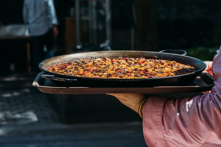

Lo Xiringuito La Cabanya
Un lloc autèntic i
únic on compartir un moment de relax amb
companys, amics, família o desconeguts, perquè no? ... al
mateix cor üíñ del Delta de l'Ebre, i dins
mateix de la Badia dels Alfacs a
La Ràpita .
Especialitats
regionals i tradicionals, tapes, plats degustació, menús,
... tot fet casolà i de proximitat.
A més ...
El Xiringuito et dóna accés a la seva magnífica
terrassa, a les seves inigualables vistes de la badia i
totes les nostres activitats de relax i esportives.
Bons
àpats amb vista al Mediterrani, moments de diversió i
relaxament, esports per a tots, per compartir amb els teus
..., Gaudeix-ne !
Estem oberts a acollir
els vostres esdeveniments ;
reunions d'empresa, aniversaris, comiats de solter/a,
bodes, divorcis, batejos, comunions, presentacions
comercials, activitats extraescolars, etc.
Truca'ns i reserva el teu dia, per fer-lo especial
!
Visquem junts xalant el moment present !
Àpats i Horaris
De matí manyana obrim les nostres portes a les 8 a.m.,
disposem de pàrquing per als nostres clients i també d'una
rampa per varar embarcacions de poc calat i una manga
màxima de 2 m.
Gaudeix dels nostres àpats en la
nostra acollidora terrassa perfumada de brisa marina, a
tocar de l'abeurador"bar" i de la teca"cuina", tens per
triar: esmorzars, dinars, tapes i berenars.
Tanquem la cuina al públic a les 9 p.m.
Normalment no fem sopars, però si sou un grup i
desitgeu preparar un esdeveniment, ens podeu consultar la
disponibilitat, estem a l'escolta.

Esmorzars
Si sou una persona matinera, vine i gaudiràs de la
tranquil·litat matinera del Delta, amb la mar plana
com una bassa d'oli, amb una suau brisa
mediterrània.
Ideal per fer un bon esmorzar vora
l'aigua i provar les nostres activitats nàutiques més
gratificants.
Panxa plena no té pena.
La nostra carta

Dinars
Per l'hora de dinar, ja se sap, la mar salada i les
activitats fan venir gana ! ... Doncs, un bon consell
: reserveu la vostra taula per no quedar-se a peu.
Surfeja per la nostra carta
i arrambla't els teus plats preferits, escolliu entre
entrants, degustacions, plats combinats, paellades,
tapes, bocates i postres ...
La nostra carta

Tapes i Degustacions
Nosaltres estem orgullosos d'estar al teu servei
sempre que tinguis un budell buit, oferir-te un
capritxet culinari. Fes un cop d'ull a la carta on
tens una varietat de plats i tapes per degustar a la
teva disposició.
Menja't un trocet de mar !
La nostra carta

Paellades
Nyaaaammm !!! Fes uns entrants per amanir les
papil·les gustatives mentre es cuina la paella o la
fideuà que estan per llepar-se els dits, fetes al
caliu de la cuina amb el nostre brou casolà de peix.
Amb el sentit del gust viuràs un esclat de
sensacions !
La nostra carta